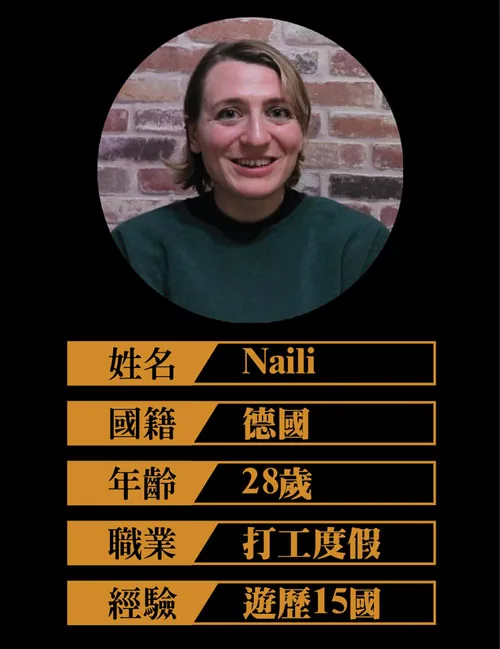
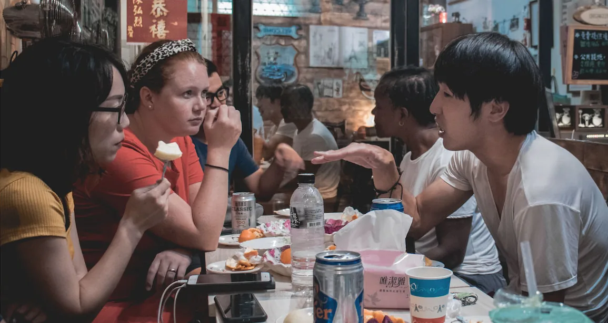
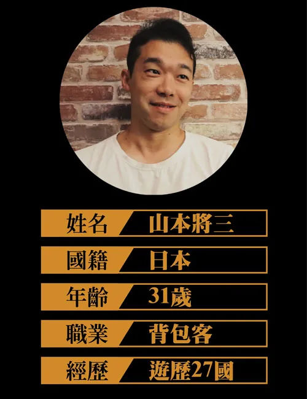
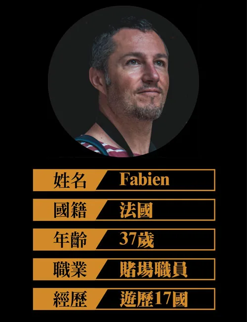
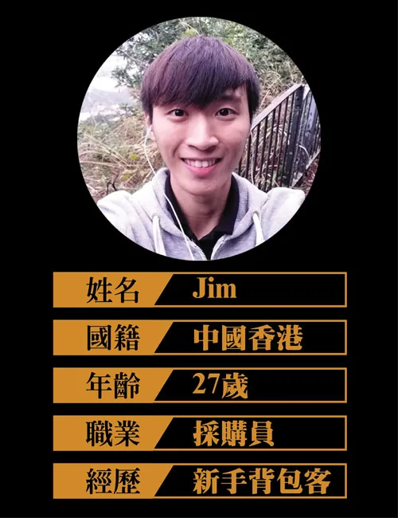
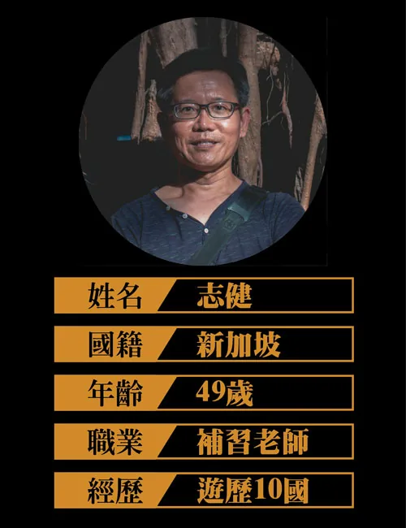
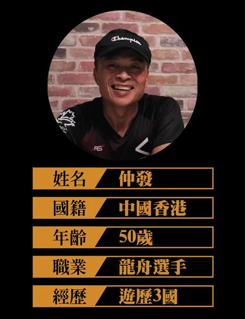
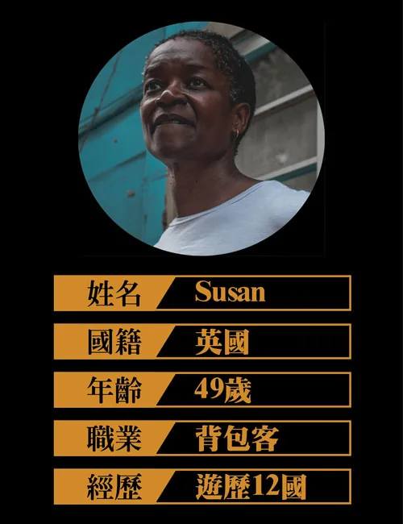
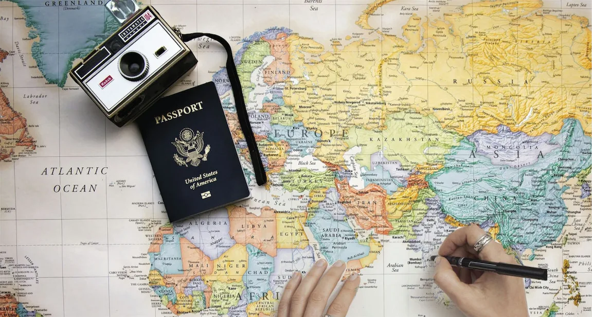

一趟旅程之中會遇見形形色色的人，可能是度著蜜月享受兩人世界的情侶；是隨旅行社出團的友人；亦或是充滿活力的家族旅遊。然而有著一群特別的人，並非照著旅行社既定的行程去旅行，他們不需瑣碎的計劃，只需一個背包，便能四處去旅行。走過城市街頭，穿越靜謐小路，感受屬於這個世界的美好，找尋著旅行真正的意義。而這些背著背包隨心所欲探索世界的旅行者們，我們稱之為—背包客。
背包客是如此有趣且特立獨行。因此，我們把研究「背包客文化」選作了我們的畢業專案主題。在製作這個畢業專案的過程中，我們結識了許多來自世界各國的背包客們。在和他們進行交流後，發現他們每個人都有著許多特別的經歷及新奇的想法。我們希望將他們精彩的故事帶給大家，讓大家能夠更加瞭解背包客文化，並且鼓勵想要背包旅行而又不敢行動的人們踏出第一步，勇敢地去探索這個大千世界！

背包客通常會在有限的預算下旅行。既不會追求奢華氣派的高檔住宿，也不會選擇昂貴的食物。他們更在意的是旅行的意義，在旅程中學習及收穫到什麼，因此對於旅行規劃及景色特點也常有自成一派的見解。他們更傾向於能夠體驗各地最真實的風俗民情，與當地人進行交流，並希望通過旅行而開拓自己的視野，了解這個世界。
在漫長的旅途中，背包客經常會在世界各地遇到許多一般人在日常中難以接觸的新奇事物。在這個單元裡，我們對來自不同國家的七位背包客進行了一些訪談，談談他們在旅途中遇到的趣事，以及他們對於背包客的一些看法及經驗。














讀萬卷書不如行萬里路。在看過攝影集及訪談影片後，相信大家已經蠢蠢欲動，迫不及待地想要背上背包走出家門，去看看這美麗的世界了。
可是，等等、等等！背包旅行並不是一件簡單舒適的事情。在我們開始背包旅行前，當然需要先做一些充足的準備，才能讓整個旅途更加順利。
因此，我們從背包客那裡收集了許多他們對於旅行準備的一些心得及經驗，並且整理製作成三部教學影片。希望這些教學能夠給新手背包客們帶來一些幫助，讓大家可以安心出發，遨遊世界！